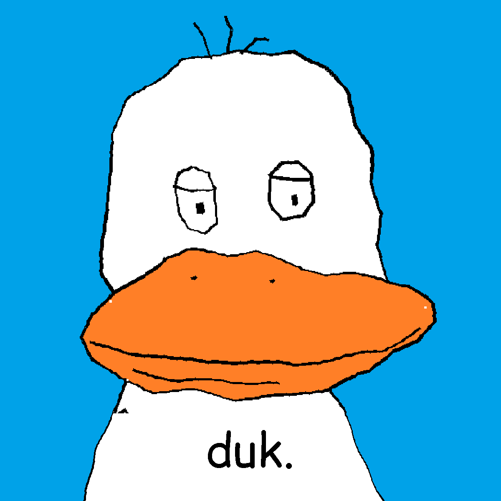
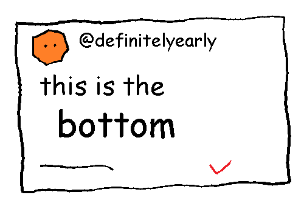
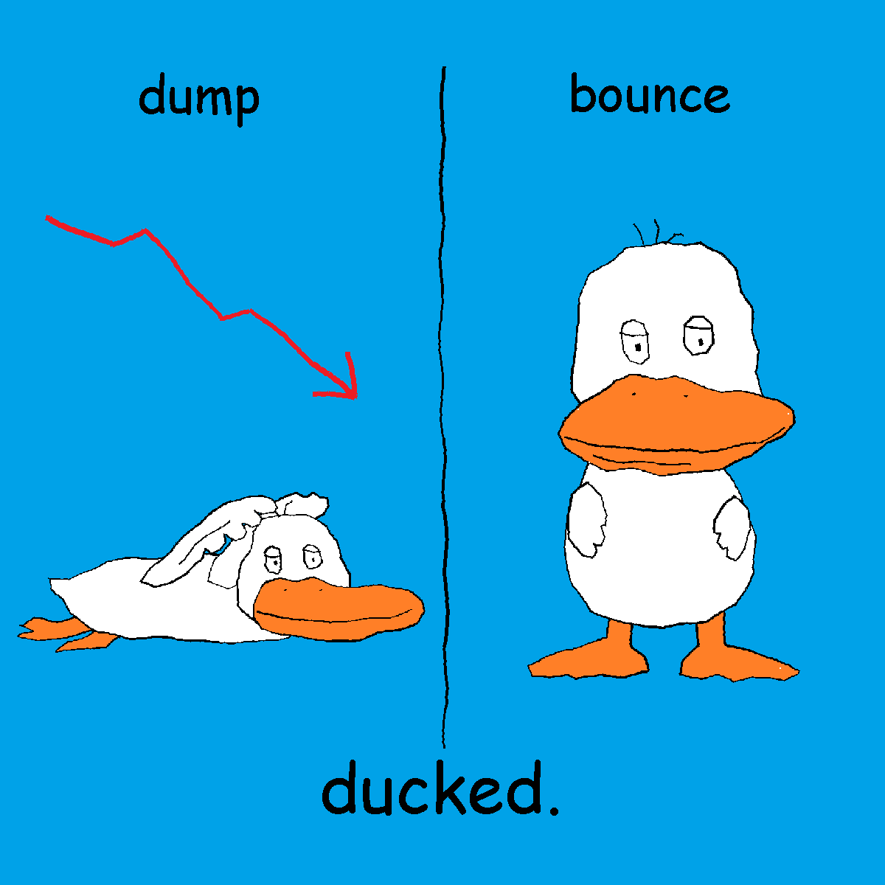
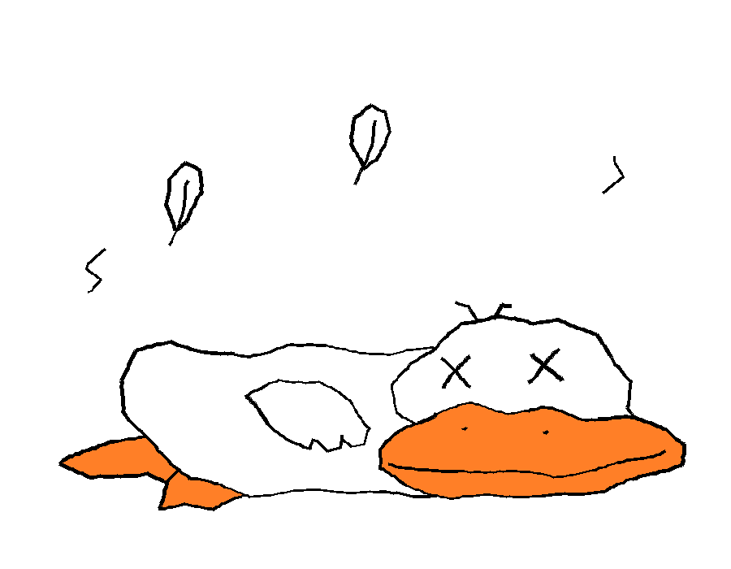
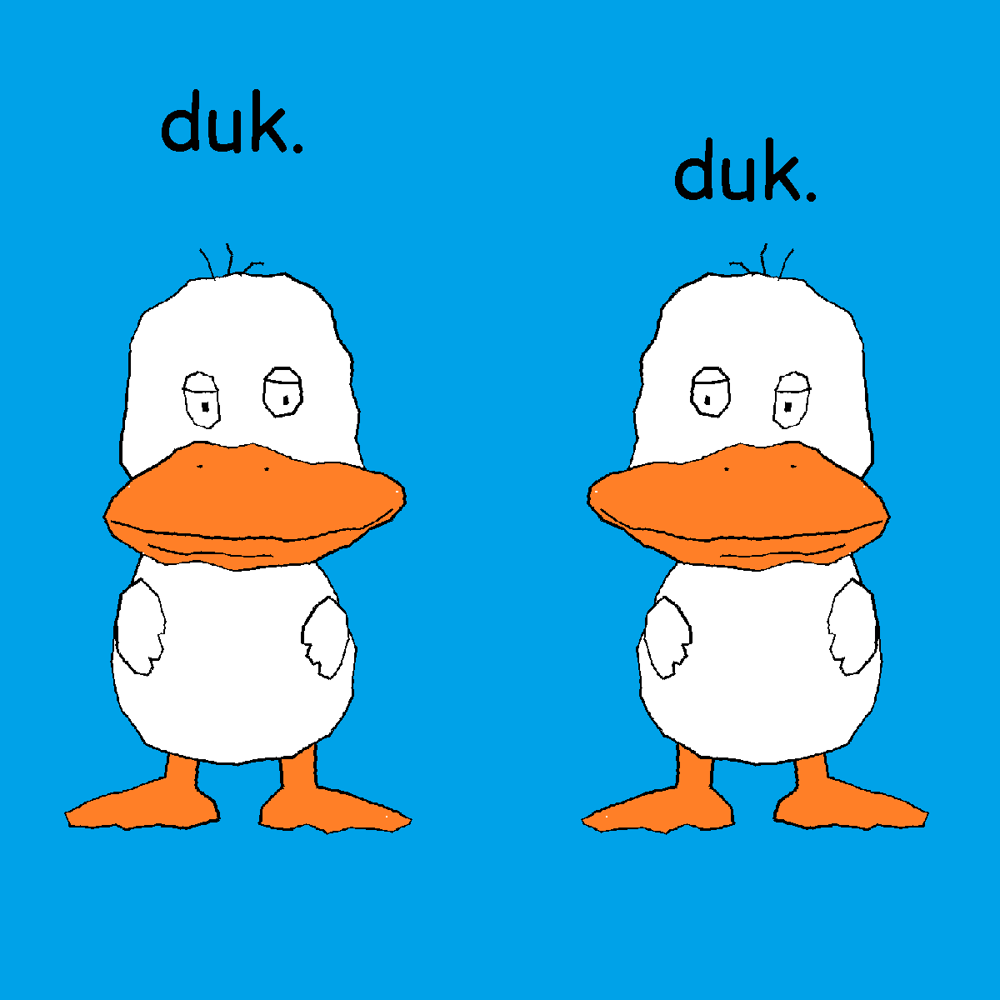
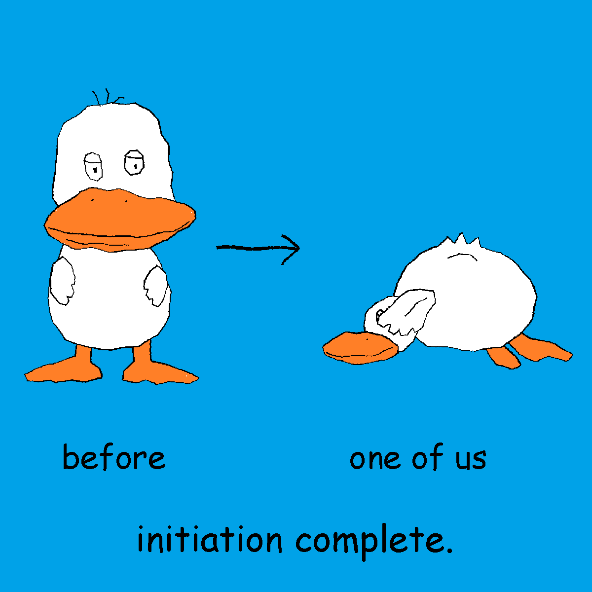
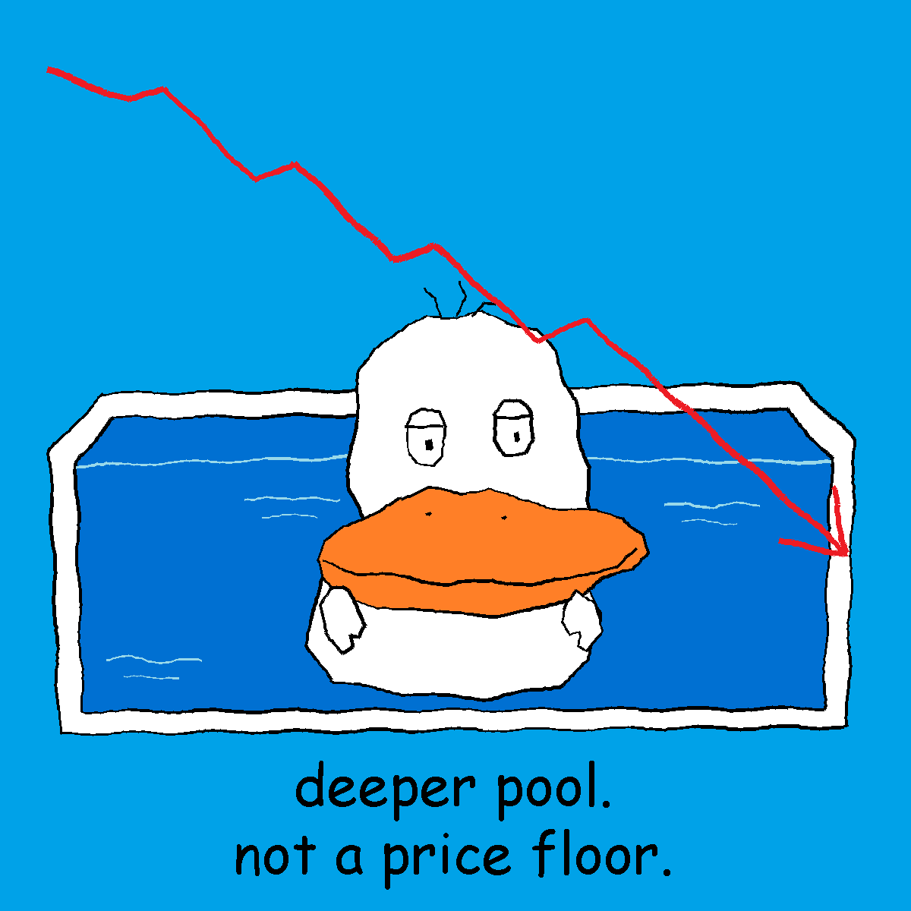

owner's manual / model: duk. / first edition
the duk manual.
everything you need to know about a duck who knows nothing. eight chapters. you can read it lying down.
- contents
- 1 duck, 1 move
- assembly
- none. he's already on the floor.
- batteries
- not needed.
- warranty
- none. it's a meme.

warning: this is a meme and none of it is financial advice. you can lose everything you put in. don't spend your rent.
chapter 0: contents
page 00read it in any order. he won't notice.
nothing in here is a promise, even if it sounds like one.
chapter 1: who duk is
page 01duk is a white farm duck. a pekin, if anyone asks. nobody asks.
he's drawn badly in ms paint. big round head, a wide orange bill that droops a bit to one side, two small eyes that don't quite line up and a few hairs sticking out of his head that never lie flat. short neck, pear-shaped body, little wings.
he isn't a rubber duck and he doesn't squeak. people ask.
no costumes in the main art: no sunglasses, hats or laser eyes. the sticker packs get to dress him up a bit. he was drawn with a mouse in ms paint and he's staying that way.
the face
he just stares at you, blank and a little worrying. the main art never acts. the stickers are allowed one bad day.
the pose and the caption do all the work. the market can be on fire or completely fine and he has the same face either way.
- species
- farm duck (pekin)
- color
- white #ffffff
- bill and feet
- orange #ff7f27
- background
- paint blue #00a2e8
- expressions
- one
- thoughts
- none detected
- signature move
- the duk (see chapter 3)
- accessories
- none in the main art

not a rubber duck. we'll keep saying it.
duk is his name and also the thing he does.
chapter 2: why ducking
page 02the short version.
something comes at you every day. red candles, a liquidation, an unlock, a gm from someone who just sold on you.
most people try to fight it. they chart it and try to predict the next one. it doesn't really work.
duk has a different approach. when it comes at him, he gets down. just duk.
he's been doing it since the first candle and he's still around.
it works for more than the market. the landlord knocks, duk. your ex texts at 2am, duk. monday shows up, duk. he drops flat, puts his wings over his head and waits for it to pass, then gets back up with the same face.
this is a joke about a duck. it says nothing about the price, and you can still lose everything.
 red candles
red candles- liquidation
 the rug
the rug
"this is the bottom" rent
rent your ex
your ex the alarm
the alarm
duk tried staring at the chart harder. it didn't help.
duk season is what we call a red market.

chapter 3: the position
page 03the duk: flat on the ground, wings over your head, still looking at the camera. here's how to do it without getting hurt.

- find some floor. carpet, grass or a bed. somewhere soft that isn't moving.
- get down on your front. slowly. whatever it is, it's already in the air.
- tuck your neck. chin down.
- wings over your head. arms work too.
- look at the camera. keep a blank face.
- hold it. wait for it to pass.
- get up. act like nothing happened.
safety, seriously
- not on roads, ledges, stairs, train platforms or anywhere people drive.
- not while driving, cycling or operating anything heavier than a mouse.
- don't lie down in public walkways for content. people trip.
- if it hurts, stop.
- no stunts. you just lie there.
the drill: when someone posts "this is the bottom", get down. you can also get down for no reason. he does.

post yours with #duking. a blank face helps.
chapter 4: the pool
page 04the creator fees don't go to the dev. they go back into the pool.
duk graduated to pumpswap on nov 26. every batch, a bot we call the keeper does this:
- claim. the creator fees go to a separate wallet that only the keeper uses. it claims them.
- buy duk. a slice of the sol buys duk on the pool.
- pair with sol. it pairs that duk with the sol it didn't spend.
- add. both go into the duk/sol pumpswap pool.
- burn the lp from that add. it burns the lp tokens it gets back. burned lp can't be redeemed, so nobody can withdraw that liquidity, us included.
the 4% reserve
the bot keeps 4% of supply (40m duk) in its wallet. it never sells it and never puts it in the pool. when it's below that, a quarter of each batch buys duk back toward 4% and the rest goes in the pool. at 4% the refill stops and all of it goes in the pool. the dev supply (51,095,238 duk) and two launch-day curve buys went to the bot wallet. part of that has already gone into the pool, with the lp burned. the rest is the reserve. the pool page shows the numbers.
the small print, at normal size
- it only adds anything if there are creator fees to claim, the keeper is running and the transactions go through. running costs come out first.
- it runs in batches and keeps a small sol reserve, so fees don't turn into an add straight away.
- this is how we set the keeper up. no smart contract forces it, so until there are transactions to show, it's a plan.
- only the lp from the keeper's own adds gets burned. anyone else's lp is theirs.
- burning lp doesn't burn any duk supply. lp tokens are the claim on the liquidity. the duk in the pool stays there.
- selling can still take sol out of the pool, so it can still get shallower.
what it does
a deeper pool can mean less slippage. not a price floor. the price can still go down, a lot. he's seen it.
receipts
every add and burn is listed on the pool page with a link to the transaction, so you don't have to take our word for it. the counter there shows what's been added to the pool so far, which isn't the same as what's in the pool right now. if the keeper is waiting or stopped, the page says that too.

this chapter used to be called "the floor". we changed it because the floor is for lying on.
chapter 5: the cult
page 05we don't say gm here. we say duk.
if someone says duk. you say duk. back. you don't need a ticker or a link. you can say it to anyone, most of them will just be confused.
the vocabulary
- duk.
- hello, goodbye and most other things.
- just duk.
- what you say about a bad day. it doesn't mean buy.
- ducked.
- got through it.
- unduckable.
- it hit you anyway.
- duk season.
- a red market.
- get up.
- what he does afterwards. it doesn't mean the chart goes up.
- the duk.
- the pose: flat on the ground, wings over your head.
- assume the position.
- you know what to do.
house rules
- if someone says duk, say it back.
- reply to real people like a person.
- don't raid, spam or paste the same reply under strangers' posts.
- don't shill other tokens here.
- credit artists, and ask before reposting someone's art.
- never ask anyone for a seed phrase. if someone asks for yours, it isn't us.
- don't post price targets or make up holders or partnerships.
- people who sell aren't traitors. say duk to them anyway.
where it lives
it's all on x. follow @justdukfun and tag your duking photos with #duking.
duk hour is every day at 21:00 utc, and everyone posts "duk." at the same time. the countdown is at the top of the page.

you don't need to hold anything to say duk.
we won't dm you first. if someone does, it isn't us.
chapter 6: how to join
page 06four steps. one of them is lying down.
-
wear the face.
take a pfp from the kit or make your own duk. keep it blue and ms paint. no costumes in the main art.
-
say duk.
post it on x, at duk hour (21:00 utc) or whenever. when someone says duk back, you're in.
-
post the position.
a photo of you doing the duk somewhere safe (see chapter 3), or just the art or a sticker. tag it #duking.
-
get up.
whenever you're ready. something else is already on the way.

if your problem isn't in the memes yet, put it in the maker and post it.
chapter 7: faq
page 07- what is this?
- a meme coin about a white duck who ducks everything. it's mostly a lot of drawings with a ticker attached.
- does it have utility?
- no. it's a duck that lies on the floor.
- who's the dev? what does the dev do?
- the creator fees go to a separate wallet that only the keeper, a small bot, uses. every batch it claims the fees, buys a slice of duk, adds duk and sol to the pool and burns the lp it gets back. it keeps 4% of supply (40m duk) in that wallet as a reserve and never sells duk. every add and burn shows up on the pool page with the transaction. the wallet's keys stay private.
- what about liquidity?
- every batch the bot claims creator fees, buys a slice of duk, adds duk and sol to the pool, and the lp from each of the keeper's adds gets burned. a deeper pool can mean less slippage. not a price floor. selling can still take sol out of the pool. the counter shows what's been added so far, which isn't what's in the pool now. more in chapter 4.
- where's the ca?
- on the home page and how to buy, and pinned on our x. ignore addresses in replies and dms. check it against pump.fun before you buy.
- wen?
- wen what. there's no roadmap. the only thing on a schedule is duk hour, and all that happens is people say duk.
- is this financial advice?
- no. you can lose everything you put in, so don't spend your rent. "just duk" means lie down. it doesn't mean buy.
- where do i get memes?
- memes, comics, stickers and the kit. it's all free to download and post. or make a duk with your own problem flying at him. credit the artist if it's community art.
- is he a rubber duck?
- no.
- why is he staring at me?
- no reason. that's just his face.
- can i put a hat on him?
- in your own memes, sure. some of the stickers already have one. no costumes in the main art.
something not covered here? ask in the replies on x.
anyone asking for your seed phrase is a scammer. block them.

chapter 8: links
page 08every page on the site.
- homethe ca, once it's live.
- memesthe archive. all free.
- comicsthings coming at him, in panels.
- the poolthe keeper's transactions and totals.
- the cultduk. → duk.
- stickersducks for your replies.
- watchhe moves. a little.
- the kitpfps, banners, templates.
- make a dukput your problem in a meme.
elsewhere
only trust links from this site. if a link isn't listed here, it isn't ours.
you have reached the end of the manual. you may now lie down.
end.
duk.